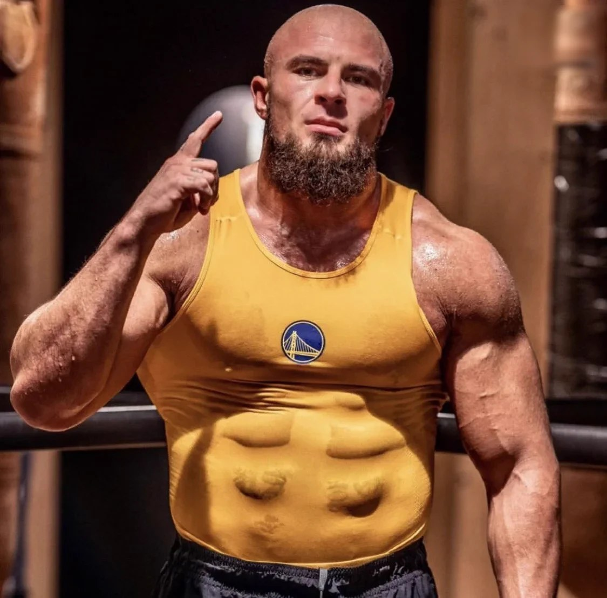
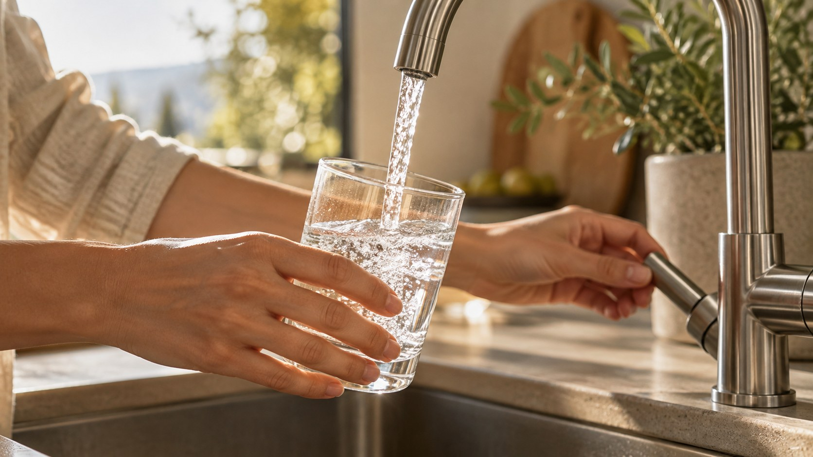
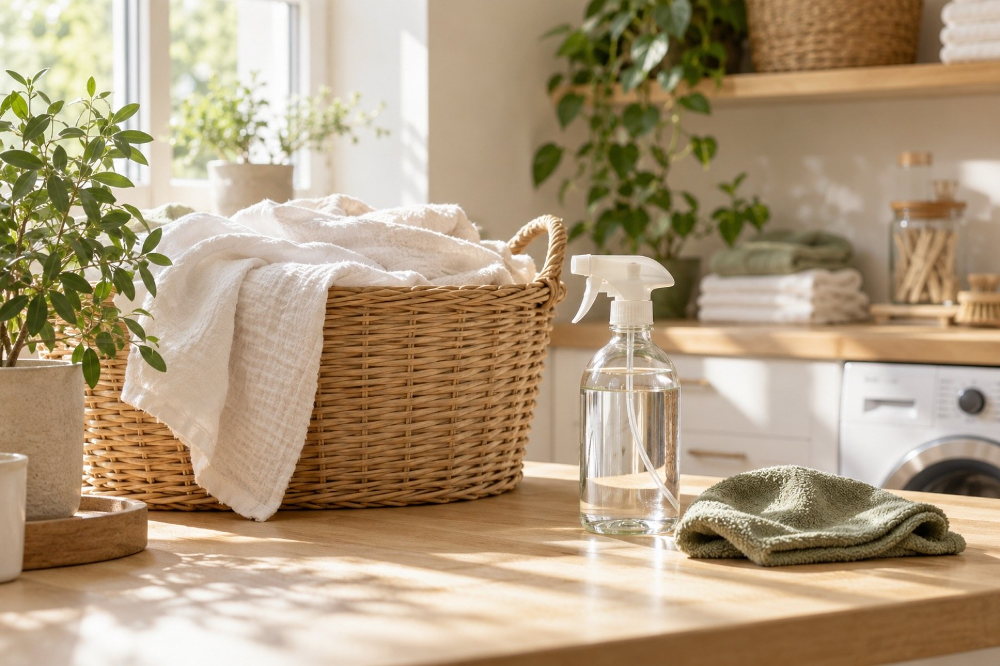

Training, Ernährung, Schlaf: im Fight‑Camp ist bei mir alles durchgeplant. Nur beim Wasser habe ich nie hingeschaut. Drei, vier Liter am Tag aus der Plastikflasche. Das habe ich geändert.
Heute kommt mein Wasser frisch aus dem Hahn, so viel ich will. Keine Kisten mehr, kein Schleppen, kein Plastik.
In diesem E‑Book zeige ich dir, was ich über Wasser gelernt habe: wie viel du wirklich trinken solltest, was in Flasche und Leitung steckt, was die fünf Wasserarten für Training, Küche und Sporttasche können und warum auch die Stärksten der Welt umgestiegen sind.
Lies es in Ruhe. Am Ende kannst du das Gerät selbst kennenlernen.
Auf jedes Gramm Eiweiß achtest du. Wasser trinkst du jeden Tag literweise, und genau da schaut kaum jemand auf die Qualität.
So viel Wasser braucht dein Körper als Grundmenge am Tag, ohne Training. Bei 80 kg sind das 3,2 Liter.
| 70 kg | 2,8 Liter |
| 80 kg | 3,2 Liter |
| 90 kg | 3,6 Liter |
| 100 kg | 4,0 Liter |
| 110 kg | 4,4 Liter |
An Trainingstagen kommt das dazu, was du ausschwitzt. Die Grundmenge ist also dein Minimum, nicht dein Ziel.
Zum Vergleich: Eddie Hall, der stärkste Mann der Welt 2017, hat früher rund 12 Liter am Tag getrunken. Mehr dazu in Kapitel 7.
trinkst du bei 90 kg im Jahr, ohne Training. In 1,5‑Liter‑Flaschen sind das 146 Sechserträger zum Schleppen.
Kein anderes Supplement nimmst du in solchen Mengen.
Die meisten Sportler trinken aus der Plastikflasche oder direkt aus dem Wasserhahn. Beides hat seine Haken.
Bei 1.310 Litern im Jahr sind das rund 870 Flaschen mit 1,5 Litern. Jede davon kaufst du, trägst du heim und wirfst du weg.
Leitungswasser kann nach Chlor riechen und schmecken. Das Gerät filtert Chlor, Geruch und Geschmack raus.
1.310 Liter Wasser wiegen rund 1,3 Tonnen. Die trägst du jedes Jahr vom Laden bis in die Küche, Kiste für Kiste.
„Das Leitungswasser in England ist ehrlich gesagt gar nicht so schlecht. Es ist besser als anderswo auf der Welt, aber nicht das beste.“

So viel du willst. Keine Flaschen, kein Schleppen, kein Plastik im Wasser. Weich im Geschmack, ohne Chlorgeruch. Genau das macht ein Kangen‑Gerät, und das schauen wir uns jetzt an.
„Kangen“ bedeutet auf Japanisch sinngemäß „Rückkehr zum Ursprung“. Kangenwasser kommt aus den Geräten der japanischen Firma Enagic, gegründet 1974 in Okinawa.
Das Gerät hängt an deinem Wasserhahn. Es filtert das Leitungswasser und teilt es dann mit Strom in basisches und saures Wasser auf. Das nennt man Elektrolyse.
Ganz normal aus deinem Hahn.
Der Filter im Gerät holt Chlor, Geruch, Geschmack, organische Stoffe und Teilchen bis 5 Mikrometer raus.
Platten aus platinbeschichtetem Titan trennen das Wasser. Es fließt über zwei Schläuche ab: Kangenwasser und saures Wasser.
Der pH‑Wert zeigt, ob Wasser sauer oder basisch ist. 7 ist neutral, alles darüber basisch. Dein Trinkwasser aus dem Gerät liegt bei pH 8,5 bis 9,5.
Bei der Elektrolyse entsteht gelöster molekularer Wasserstoff (H₂). Er gilt als Antioxidans, also als Stoff, der freie Radikale abfangen kann.
ORP misst in Millivolt, ob Wasser eher oxidiert oder reduziert. Kangenwasser hat einen Wert im Minusbereich. Das steht für antioxidatives Potenzial.
Calcium, Magnesium und Kalium aus deinem Leitungswasser bleiben weitgehend erhalten. Anders als bei einer Osmoseanlage.
Vom Shake bis zur Sporttasche. Per Knopfdruck stellst du am Gerät ein, welches Wasser rauskommt.
| pH | Wasserart | Für dich als Sportler |
|---|---|---|
| 8,5 bis 9,5 | Kangenwasser Trinken | Trinkwasser für Training, Shakes, Supplements, Kaffee und Kochen |
| 7,0 | Neutrales Wasser Trinken | Zum Einnehmen von Medikamenten und für Babynahrung. Frei von Chlor, Rost und Trübungen. |
| 6,0 | Schönheitswasser Für außen | Für Haut und Haare, nach dem Duschen und nach der Rasur. Eier und Pasta kochst du auch damit. |
| 11,5 | Stark basisch Nicht trinken | Obst, Gemüse und Meal Prep. Löst Fett und Flecken, auch in der Wäsche. |
| 2,5 | Stark sauer Nicht trinken | Nimmt Gerüche aus Sportwäsche, Handschuhen, Schuhen und der Gymtasche. Reinigt Bretter und Flächen in der Küche. |
Für pH 2,5 gibst du dem Gerät einen Elektrolyseverstärker zu, eine kleine Zusatzflüssigkeit.
Das berichten Sportler und Nutzer, seit sie umgestiegen sind.
Sportler berichten, dass sie nach dem Training schneller regenerieren. Laktat wird schneller abgebaut, der Muskelkater fällt kleiner aus.
Das Wasser wird im Gerät elektrolysiert. Viele Nutzer erleben, dass sie damit besser hydriert sind als mit Wasser aus der Flasche.
Weich im Geschmack, ohne Chlorgeruch. Die meisten trinken damit ganz von allein mehr, auch die, die es vorher nie geschafft haben.
Regeneration passiert nachts. Viele Nutzer berichten, dass sich ihr Schlaf verbessert, seit sie umgestiegen sind.
„Du kannst Training, Regeneration, Ernährung und Essen perfekt im Griff haben. Aber wenn du nicht das Richtige trinkst, geht es bergab.“
Fang langsam an: zuerst pH 8,5, dann Schritt für Schritt 9,0 und 9,5. Trink über den Tag verteilt.
Am besten trinkst du es frisch. Für unterwegs füllst du es in eine gut verschlossene Glasflasche und lagerst es kühl. Nach 1 bis 2 Tagen lässt es nach.
Shakes, Kreatin, Vitamine: Viele nehmen ihre Supplements mit dem basischen Trinkwasser ein, weil es die Wirkung unterstützt.
Für Shakes, Kreatin, Vitamine und alles, was du rund ums Training einnimmst.
Tabletten nimmst du immer mit dem neutralen Wasser ein, nie mit dem basischen.
Deine Trinkmenge aus Kapitel 1. Zu Hause frisch aus dem Hahn, fürs Gym in der Glasflasche.
Pulver direkt mit dem Trinkwasser anrühren.
Schöne Farbe, voller Geschmack. Oft reicht weniger Kaffee oder Tee.
Neutral, frei von Chlor, Rost und Trübungen.
Kangenwasser trinkst du am besten direkt nach der Herstellung. Wenn du es mitnimmst, dann in einer gut verschlossenen Glasflasche, kühl gelagert.
Das Gerät macht nicht nur Trinkwasser. Mit den verschiedenen pH‑Werten bereitest du dein Essen anders vor.
45 Minuten einlegen, mit pH 9,5 abspülen. Hilft, Rückstände von der Schale zu lösen.
30 Minuten einweichen, mit pH 9,5 abspülen.
45 Minuten eingelegt wird Fleisch zarter.
Nimmt Gerüche von Fisch und Schneidebrettern.
Bringt das Aroma zur Geltung. Du brauchst weniger Salz und Gewürze.
Eier platzen nicht und lassen sich leichter schälen. Pasta bleibt al dente.
Fisch und Garnelen besprühen, damit sie den Geschmack behalten.
Löst Fett. Du brauchst weniger Spülmittel.
Nach dem Training ist vor der Wäsche. Auch dafür hat das Gerät das passende Wasser.

Sportwäsche, Handschuhe, Schuhe und die Gymtasche einsprühen.
1.500 ml in die Maschine. Für Duft ein paar Tropfen ätherisches Öl.
500 ml ins Fach für den Weichspüler.
Einsprühen oder über Nacht einlegen.
Aufsprühen statt Creme und Bodylotion, als Gesichtswasser zum Schluss.
Als Tonikum, auch in der Sprühflasche für unterwegs.
Nach dem Shampoo statt Conditioner. Lässt sich besser kämmen.
Fußbad, etwa 45 Minuten, am besten kalt. Weicht Hornhaut auf.
Gesehen bei den Größten: Bei Ronaldo steht ein Kangen‑Gerät in der Küche, und der stärkste Mann der Welt hat gleich zwei davon.
In der Doku „Soy Georgina“ über Georgina Rodríguez, die Partnerin von Cristiano Ronaldo, steht es in der Küche der Familie: ein Kangen‑Gerät. Achte mal drauf.
Hier siehst du das Video →2017 wird Eddie Hall der stärkste Mann der Welt, der erste Brite seit 24 Jahren. Er hat lange nach dem besten Trinkwasser gesucht, Bewertungen gelesen und Fachleute gefragt. Dabei ist er auf Kangenwasser gestoßen. Heute hat er ein Gerät in der Küche, mit eigenem Hahn neben der Spüle, und eins in seinem Spa.
Hier siehst du das Video →„Kangenwasser ist Wasser, das reich an molekularem Wasserstoff ist. Die Vorteile: entzündungshemmend, gegen Übersäuerung, mehr Sauerstoff im Blut, Hydration der Zellen.“
Im Video rechnet Eddie vor, was ihn sein Wasser aus der Flasche gekostet hat. Aufs Jahr gerechnet sind das fast 5.000 €.
„Ich habe in das Gerät investiert, weil ich die Plastikflaschen satt hatte. Mich hat der ganze Plastikmüll gestört und das Geld, das ich verschwendet habe.“
Dein Körpergewicht mal 40 ml ergibt deine Liter am Tag. Mal 365 sind es deine Liter im Jahr. Mal dem, was du für einen Liter zahlst, kostet dich dein Wasser im Jahr:
Bei 90 kg sind das 1.310 Liter, 146 Sechserträger und rund 870 Plastikflaschen. Jedes Jahr. Mit dem Gerät kaufst du keine Flaschen mehr und hast Wasser, so viel du willst. Die Geräte liegen im vierstelligen Bereich, dazu kommt je nach Verbrauch etwa einmal im Jahr ein neuer Filter.
Du weißt jetzt, wie viel du trinken solltest, was in Flasche und Leitung steckt und was ein Kangen‑Gerät für Training, Küche und Sporttasche kann. Jetzt geht es um dich.
Mein Team meldet sich bei dir und beantwortet alle Fragen rund um das Wasser.
Wie es arbeitet und was du mit jeder Wasserart machst.
Auf Wunsch zahlst du über das Ratenzahlungssystem von Enagic, mit Anzahlung und Monatsraten.
Ganz ehrlich: Die Geräte liegen im vierstelligen Bereich. Trag dich ein, wenn du ernsthaft überlegst, dir ein eigenes Gerät zu holen. Dann nimmt sich mein Team Zeit für dich.
Ich will das Gerät kennenlernenTrag dich auf meiner Seite ein, wenn du ernsthaft überlegst, dir ein eigenes Kangen‑Gerät zu holen.